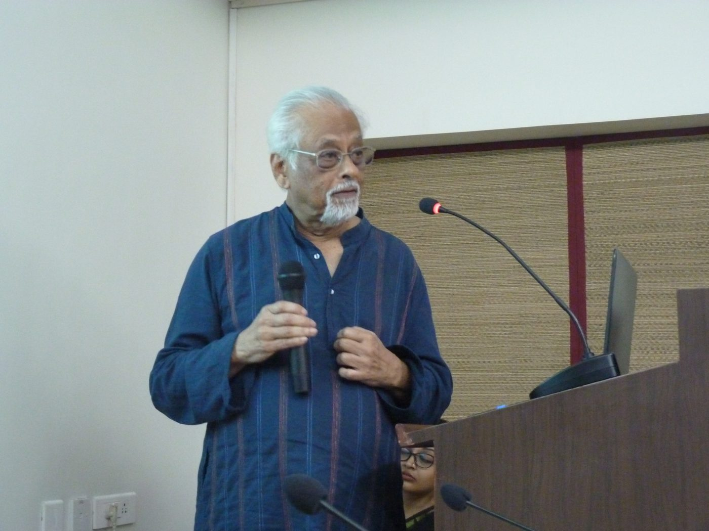

Courses
Recent interdisciplinary courses at IIT Mandi.
- History of Science and Technology
- Philosophy of Science
- Quantum Cognition
Lectures
Keynote addresses, invited and public lectures, with slides and recordings.

Recent interdisciplinary courses at IIT Mandi.
Keynote addresses, invited and public lectures, with slides and recordings.
